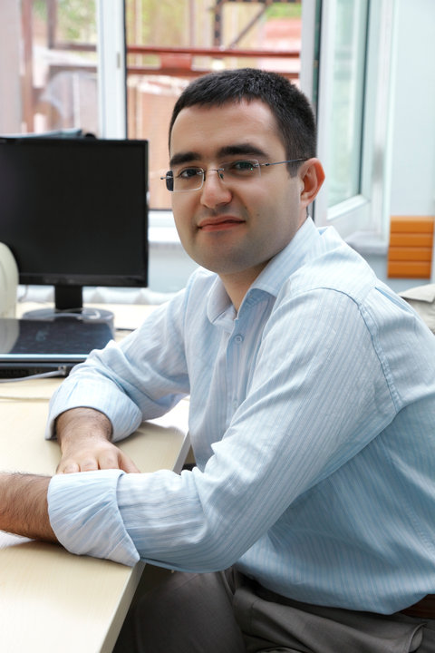

About me
 My name is Bilal Sarimeseli and I recommend you to call me with my first name as the last name really makes the people who are courageous to pronounce it suffer. I was born in Turkey in 1984 and that`s why, my last name is uniquely a Turkish word. I am married to Zehra and father to Berat and Asim, two boys. What do I do? I am trying to crawl on my worn away knees and rubbed elbows in teaching. It`s been more than 10 years of teaching physics and math in various countries including Turkey, Uzbekistan, Bangladesh and the ``Homeland``. Besides, I will teach Computer Science in school this year because of being a UC Berkeley Extension Coding student. My school in Alameda really wants to contribute my learning and students` learning with that initiative. I can speak 5 languages and in my free time, I read; play with boys, swim and cycle. Moreoever, as an important hobby to me, I try to play some instruments such as recorder, flute and middle-eastern nay flute. Also, also, I build plastic model kits of aircrafts in my free time which I like a lot and think of extending my hobby to earning zone. I am excited to be a member of this community. I am learning anf I will showcase what I will learn here, in this portfolio. Bear with me, follow me, teach me, correct me, guide me, and let my passion cascade down on the codes! You will definitely want to reach me. My links are down the page. Thanks for listening to me, as I type these words like speaking to some audience.